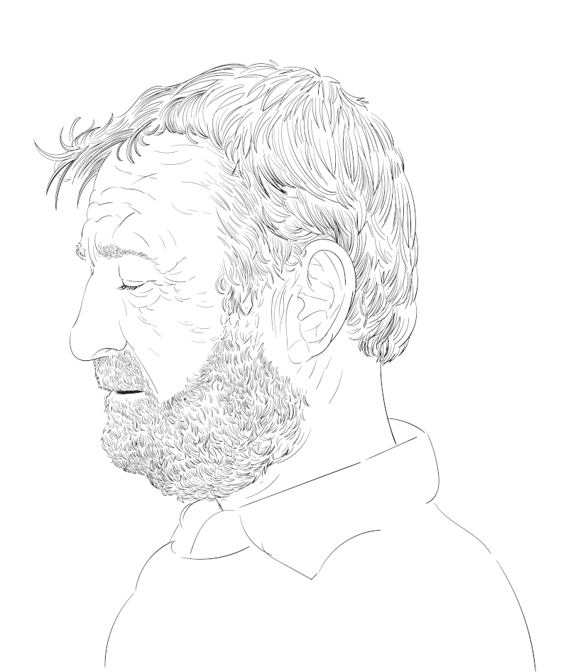

Lucas é um idoso de 81 anos que ama artes mais do que tudo, um amor que herdou de seu falecido pai.
Foi um artista muito apreciado em sua cidade, com suas obras expostas por todos os bairros do município, e com todos os cidadãos querendo adquirir seus desenhos.
Atualmente aposentado, Lucas passa seus dias aproveitando a arte.
O que Lucas deveria fazer hoje?